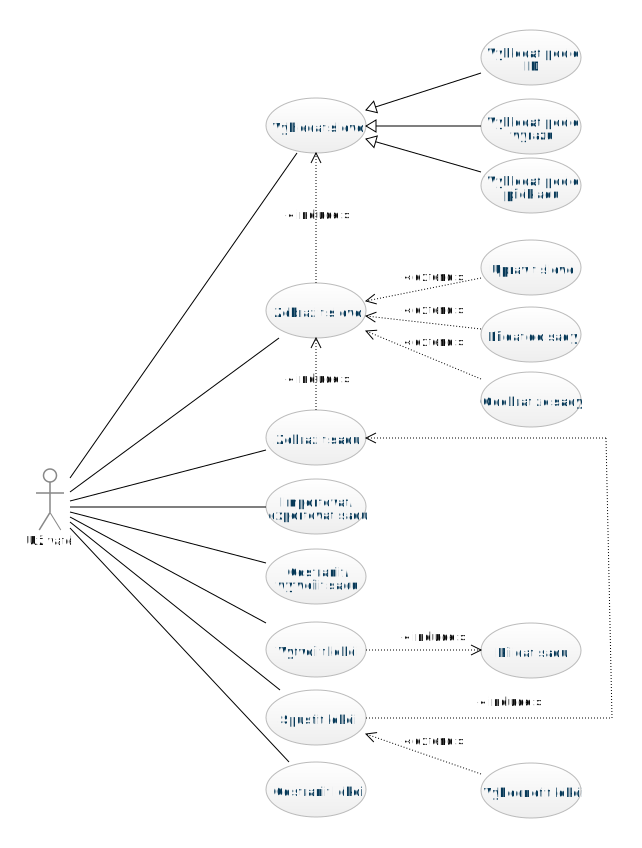
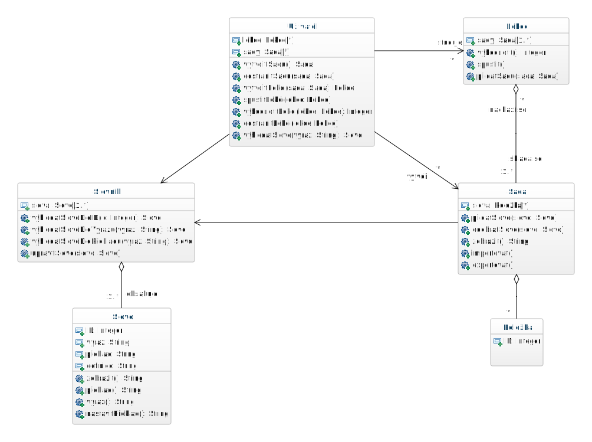

Výukový slovník
Aplikace výukový slovník umožňuje vyhledávání slovíček, vybraná slovíčka lze seskupovat do sad slovíček (např. "oblíbená slovíčka", "slovíčka, která chci zítra procvičit", "téma cestování"). Uživatel si může následně spustit výukovou lekci, která se skládá z vybraných sad. Tyto sady se uživateli postupně vhodným stylem zobrazují, uživatel na to nějak reaguje (zadá překlad, z překladu uhodne slovíčko apod.), následně se lekce vyhodnotí.
Případy užití
Diagram

Tabulka
| Případ užití |
Zajišťuje |
| Třída |
Operace |
| Vyhledat slovo |
slovník |
vyhledatSlovoDleID
vyhledatSlovoDleVýrazu
vyhledatSlovoDlePřekladu
|
| Zobrazit slovo |
slovo |
zobrazit |
| Upravit slovo |
slovník |
upravitSlovo |
| Přidat slovo do sady |
sada |
přidatSlovo |
| Odebrat slovo ze sady |
sada |
odebratSlovo |
| Zobrazit sadu |
sada |
zobrazit |
| Importovat sadu |
sada |
importovat |
| Exportovat sadu |
sada |
exportovat |
| Vytvořit sadu |
uživatel |
vytvořitSadu |
| Odstranit sadu |
uživatel |
odstranitSadu |
| Vytvořit lekci |
uživatel |
vytvořitLekci |
| Přidat sadu |
lekce |
přidatSadu |
| Spustit lekci |
uživatel |
spustitLekci |
| Vyhodnotit lekci |
uživatel |
vyhodnotitLekci |
| Odstranit lekci |
uživatel |
odstranitLekci |
Třídy
Diagram

Tabulka
| Uživatel |
Spolupracuje |
| Třída |
Operace |
| vytvořitSadu |
Vytvoří objekt Sada a přidá jej do seznamu sady. |
|
|
| odstranitSadu |
Odstraní vybranou Sadu ze seznamu sady. |
|
|
| vytvořitLekci |
Vytvoří objekt Lekce a přidá jej do seznamu lekce. K vytvořené lekci přidá zadané sady pomocí metody přidatSadu ve třídě Lekce. |
Lekce |
přidatSadu |
| spustitLekci |
Vyvolá a zobrazí vybranou Lekci. |
Lekce |
spustit |
| vyhodnotitLekci |
Vypočítá úspěšnost splnění vybrané Lekce za použití metody vyhodnotit u třídy Lekce. Vrací vypočítané ohodnocení. |
Lekce |
vyhodnotit |
| odstranitLekci |
Odstraní vybranou Lekci ze seznamu lekce. |
|
|
| vyhledatSlovo |
Vyhledá slovo dle zadaného výrazu, nalezený objekt typu Slovo vrací. |
Slovník |
vyhledatSlovoDleVýrazu |
| Sada |
Spolupracuje |
| Třída |
Operace |
| přidatSlovo |
Přídá Slovo do seznamu slova. |
|
|
| odebratSlovo |
Odstraní vybrané Slovo ze seznamu slova. |
|
|
| zobrazit |
Pro všechna slova v sadě zavolá vyhledatSlovoDleID ve třídě slovník, získané Slovo zobrazí pomocí metody zobrazit ve třídě Slovo. |
Slovník |
vyhledatSlovoDleID |
| Slovo |
zobrazit |
importovat |
Importuje seznam slova. |
|
|
| exportovat |
Exportuje seznam slova. |
|
|
| Lekce |
Spolupracuje |
| Třída |
Operace |
| spustit |
Spustí lekci, pro zobrazení vybraných sad slov používá metodu zobrazit ve třídě Sada. |
Sada |
zobrazit |
| přidatSadu |
Přidá vybraný objekt Sada do atributu sady. |
|
|
| vyhodnotit |
Vyhodnotí úspěšnost - pro každou sadu slov zjistí, zda zadaný překlad slov je správný. Vypočítané ohodnocení vrací. |
|
|
| Slovník |
Spolupracuje |
| Třída |
Operace |
| vyhledatSlovoDleID |
Vyhledá slovo podle ID. Vrací nalezené Slovo, v případě neúspěchu null. |
|
|
| vyhledatSlovoDleVýrazu |
Vyhledá slovo podle výrazu. Vrací nalezené Slovo, v případě neúspěchu null. |
|
|
| vyhledatSlovoDlePřekladu |
Vyhledá slovo podle překladu. Vrací nalezené Slovo, v případě neúspěchu null. |
|
|
| upravitSlovo |
Upraví zadané slovo pomocí metody nastavitPřeklad ve třídě Slovo. |
Slovo |
nastavitPřeklad |
| Slovo |
Spolupracuje |
| Třída |
Operace |
| zobrazit |
Vrátí popis slova. |
|
|
| překlad |
Vrátí překlad slova. |
|
|
| výraz |
Vrátí výraz slova. |
|
|
| nastavitPřeklad |
Nastaví nový překlad slova. |
|
|